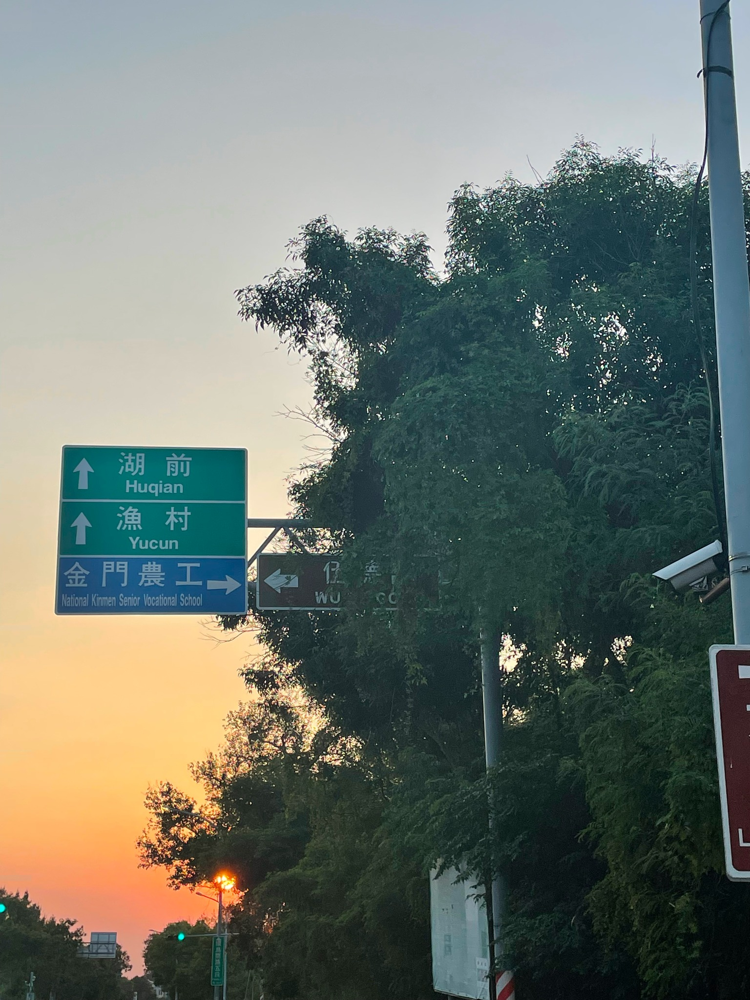

在那雲彩飛盡、華燈初上的時候
寫於 2022 年八月

我在八月中用了三天年假回了一趟防區，是退伍之後，二十幾年來第一次回去，把想去的地方走了一輪。那三天其實過得開開心心的，反倒回來之後，卻因為這趟防區之旅，連續兩週都在一種很糟糕，而且會不斷疊加，像是要把人吸進無底深淵的那種情緒中。
我在荷蘭還有美國加州有過大麻體驗，那種體驗是覺得好想笑，接著就是在想笑之上不斷往上疊加，用文學院學到的說法，有種「後設」的想笑。
大概像這樣：咦，奇怪，我好想笑耶？我怎麼了？呵呵！我怎麼會注意到我自己一直想笑呢？這種事情有什麼好注意的？誰會注意這種事情？去注意這種事情是不是很好笑？呵呵！那我為什麼會注意到我想笑呢？我幹嘛要去想為什麼自己想笑？去想為什麼想笑這件事情，是不是也很好笑？呵呵！那麼到底是我想笑這件事情好笑？還是注意到自己想笑這件事情好笑？還是幹嘛要想為什麼想笑這件事情好笑？為什麼要做這種比較呢？做這種比較是不是很好笑？呵呵呵呵呵呵呵…。
而我這兩週活在一種很糟糕的情緒中，我很感謝這兩週願意聽我講話的朋友，我很需要有人願意聽我說話。
這兩週我的身體裡一直發送著一種糟糕的訊息，我不會說這個訊息是來自腦海裡或是心底，這個訊息不像是來自掌管思考的地方，而像是來自全身每一條神經，甚至來自血管，我的反應是全身都在顫抖。我也不會說像是自己對自己一直說著什麼，這個訊息並沒有聲音。曾經聽說人體掌管幸福感的其實不是大腦而是腸胃，我所感受到的訊息似乎一開始也是來自那個地方，最後從腰間一直蔓延到肩膀。在這邊只能用文字形容，而訊息內容大概是：
我很沒用。
我什麼都做不對，也什麼都做不好，甚至，我什麼都做不到。
我所做的一切都是徒勞無功，一切都會煙消雲散。
我很沒用，非常沒用，真的很沒用。
▲
我這趟旅程是趟慢遊，大部分觀光景點，其實我都沒去，莒光樓啦、古寧頭啦，二十年前就去過了，我想做的是重新體驗當年的自己最開心的片段。簡單講，我就只是騎了民宿提供的單車，在金東晃來晃去而已。
我在升一兵的不久之後，花了三個月的餉弄了一台腳踏車，我不確定是不是跟山外現在還在的那家美利達買的，以前山外應該有兩家車行，所有在金門騎單車的記憶，都很開心。
有了單車代表：你可以比連上絕大部分弟兄更早衝到山外，領到在金假單之後，其他人都還在慢慢走，你已經到了，爽！騎單車去防衛部送假單送公文，從太武山上直接衝下坡，爽！中間會經過山外，順便買兩個口福麵包帶回連上，然後，由於營區蓋在海邊的斜坡上，從大門進去之後，一路都是下坡，所以我會把單車小心牽過大門的雞爪釘、重新跨上單車之後，風風火火，一路粗暴地滑行到安官室前。這兩天還在跟以前弟兄的 LINE 群聊到這件事，他說，他站安官哨時，看到有人騎單車這樣滑到安官室，都恨為什麼不能直接拿起手上的 65K2 對自己的弟兄開槍。
口福麵包是家在山外的麵包店，口味嘛，普普。服役的時候很多東西又不是吃味道的，只要不是自己連上伙食的食物，我們尋找的是自由世界到底是什麼味道。口福麵包一方面是種戰利品，帶著口福麵包回到連上，代表你去了山外；一方面是種安慰劑，帶個麵包給其他弟兄，代表的是就算我出去了我也想到了你，雖然一定程度比較像是炫耀就是了。這趟在山外，看到口福麵包的鐵門深鎖，聽說搬到了金城；我沒去找，口福麵包不在山外就沒意思了，但人家必定是為了自己的營生搬到金城。
如果伙委這種一早就去山外市場買菜，或是其他工連來營部連洽公，早上就會經過山外，就可能會買一家叫做阿英豆漿的早餐，大概就是飯糰與豆漿之類的。我自己大概都是下午洽公，上午整理其他工連帶來的東西，下午再去防衛部，本來就很少早上離開營區，在金休假大概也都是先吃完連上伙食再出門。本想問問這個在山外市場的阿英豆漿還在不在，問一下民宿老闆，老闆說他聽都沒聽過。
我選在山外住宿，因為對我來說，在防區休假與山外應該是要畫上等號的。不過，怎麼口福麵包與阿英豆漿都沒有了，這些可都裝滿了我對於所謂自由最豐滿的想像。
▲
下午，我在山外的民宿放好行李，拿到一台登山車，就先往以前的漁村營區方向，車況不是很好，大盤已經變形了，每轉動一次大盤，都可以聽到鏈條發出喀啦、喀啦的聲響。
刻意不走大路市港路，從湖前的小路繞過去，那才是我以前為了躲避憲兵的單車路線。另外一邊塔后也有條泥巴小路，那條小路以前充滿牛糞夾雜的青草香，夏天開滿了牽牛花，路邊也有牛隻晃來晃去，不過會經過後指部，沒事經過其他部隊大門，不舒服，所以大概不太會選擇那條路。
只是現在，無論是湖前還是塔后，都蓋上了一大堆的新建築物，塔后原本空空蕩蕩的，就是一大片空地，沒想到現在蓋的房子反而特別多，這一帶居然還有全聯超商，完全不是我記得的金門防區。反觀，山外那三條街原本塞滿了阿兵哥，以及專門為了服務阿兵哥的店家，像是網咖、退伍紀念品店（搞不懂到底是誰開始退伍要送人家一套指揮刀的風氣）、三溫暖，全沒了，店面都是鐵門深鎖。可能過沒多久，我們會改稱塔后是金東第一鬧區吧？
在已經變成金湖鎮清潔隊資源回收中心的前漁村營區、還有靠海的幾條小路遊蕩一陣，在新湖漁港看看料羅灣。變成垃圾場至少還是個有人味的地方，你看看花崗石醫院，都已經變成 YouTuber 去半夜探險的鬼屋了。大約下午四點，天還亮著，思忖著有什麼可以兩三個小時內來回，天黑可以回到山外吃飯的地方。眼前就看到料羅碼頭，那個二十年前把我送到金門的地方，我跟這個鬼地方一切愛恨交織的孽緣的開始。
料羅港應該是不能進去的，現在應該是海巡看守吧？至少靠近去看看也好。以前料羅還有戶民家，專門賣來自對岸的走私品，其中最有名的是滴水觀音像，有些弟兄會特地買來寄回家裡；這戶民家就跟周圍其他房舍一樣，平時關上大門，外觀無異，去之前還要先打電話預約，這個地方要怎麼去、有什麼可以買，在弟兄之間都是口耳相傳，不會留下公開資料，但奇怪的是似乎又無人不知。二十年後，我想因為小三通，這門生意應該早就沒了。
金東的公路是自行車愛好者的天堂，路又平、車又少，沿路都是茂密的樹蔭。下次我想帶我自己的公路車來。
雖然這樣去料羅比較遠，但反正我是來休假的－我先折回山外，看一下市港路以前那家賣蜜豆冰還可以刺名條的店還在不在，果然沒了。轉彎太湖路，經過那個巨大、溶不進背景，跟旁邊山外的三條街看起來是兩個世界，完全就是在破壞市容的免稅店。遠遠看，縣立醫院什麼時候變得那麼大了，話說好像也已經不是縣立的了，變成了衛福部的醫院。
經過讓人舒服的人工湖（雖然我也知道人工湖的另一邊是讓人抓狂的幹訓班），去畜產實驗所拍個兩張照片（這地方我以前也沒進來過），拍一拍巨大的「青草地」牌牛奶盒雕塑，還有那個讓人不知道從哪裡開始吐槽的吉祥物 ─ 有隻乳牛穿著顯然是美國隊長仿冒品的制服，盾牌上居然寫著毋忘在莒。仔細一想，我服役期間，好像也從來沒有喝過金門本地的牛奶，這個地方對我來說又熟悉又陌生。
回頭走三多路、金港路到達料羅海濱公園，沿路那些閩式建築，倒是跟記憶裡頭一點不差，來領新兵，來領台灣送來的冷凍副食品，就是這條路。我在料羅海濱公園脫下了鞋，踏在沙灘上，讓海沙穿過我的趾縫－這是我在金門從來沒有做過的事情。以前不斷被告誡，沙灘是反登陸的戰場，掛滿了軌條砦，沙灘上有地雷，所有的沙灘都不能去；在金休假又要穿制服，穿著制服不穿鞋襪，那一定是被登記服儀不整等著軍紀再教育。還沒去過一次沙灘就退伍了，而現在呢，原來這就是防區的沙灘啊。我來這裡休假，就是為了這個吧。
▲
回程我就開始不對勁了。
我回程選擇走環島南路，一路上都沒有車輛，要入夜的金東公路就是這麼安靜，甚至有點嚇人的安靜。我從東往西走，西沈的太陽在我前方，金光在路樹的枝枒之間閃動，樹影全是黑色的，天色也開始從橘色變成紫色，路燈一盞盞亮起，穿過樹影是夏天微微的海風。我的身上是汗水的臭味，衣服上、我的棒球帽上再經過海風這麼一吹，應該會冒出一層白色不規則形狀的鹽粒。啊！這個氣溫，這個太陽，這個路面，這個風，這個氣味，這個位在湖前的路口，我累了、餓了，我可以回到連上吃飯了…
不對！我退伍二十年了！甚至，我的部隊都不在了！
雖然漁村就在前面，我為什麼會想回連上吃飯？我明知我是要回去山外的。
該死啊，這條是下工的路，現在是下工的時間，從料羅碼頭、幹訓班還是什麼其他地方，回到漁村營區的時間，在這個路口，我好像跟二十年前那個穿著迷彩服，坐在十噸半卡車上，那個沒用的二兵的身影重疊了。同樣的環境，同樣的飢餓，但是我不該有同樣的本能或制約反應啊，我已經退伍二十年了。
但我完全忍不住另一個想法：現在其實已經錯過吃飯時間了，連上如果知道有公差，工差又可能錯過吃飯時間，那麼會幫公差留飯；中山室最後面的那張桌子現在應該已經擺滿了便當，我拿了便當之後，可以先去營辦室，吃一吃之後開始登記學長從防衛部拿回來的公文。營辦這個時間雖然吵，但總比在中山室吃飯好…這什麼鬼啊…
這些事情我都應該忘了才對，我已經二十年沒想過這些事。可是，身體都記得，我的身上，還有著那個二十年前的二兵。
▲
我用手機隨手拍了兩張照片，繼續獃了一兩天，騎車遊玩，倒也沒什麼。回來過幾天，反倒是身體又想起來什麼事情，下班回家後覺得胸悶，身體無故地顫抖，像是氣到發抖的那種，很像是曾經的那個二兵慢慢地回來了。那個二兵沒有面貌，他更像是一些粗暴、原始的生理反應，或是情緒吧。以前那些軍官還有學長的臉與名字，我都想不起來了，但是身上卻慢慢冒出那個二兵曾經面對那些人的反應。在那個路口我應該打開了什麼開關，有什麼腺體開始產生讓我覺得自己很沒用的分泌物。
我這二十年應該過得也不差吧，好歹我也拿到一張國立大學的碩士文憑，雖然現在來看當然覺得很爛，但也算是那時我可以交出最好的論文了。我在軟體產業也應該做得不差吧，前幾個月我才剛幫公司挺過一個原本無法交付的專案，所以我可以來休假，雖然失敗收場的專案不少，也做出幾個可以用來溫飽的產品。我在這個社會上也不算差吧，雖然還在付貸款，但我也已經有了房產，我可以負擔我自己還有父母的帳單與稅單，我好歹也是一個組織下有個位數工程師的資訊業小主管。我也騎過西進武嶺，雖然這輩子大概也就只騎這麼一次了。我應該已經過上自己的人生了吧？
可是我在十噸半卡車上的期待，是不是一次一次落空了？可是連上真的有幫公差留便當嗎？有哪些幹部還留在連上，這些幹部都搞清楚公差派往哪裡了呢？幹部記得公差還沒吃飯嗎？連上真的有留便當嗎？
還是，我剛回到連上，還沒吃飯就得要上哨？就算出公差，我依然是營部文書，回到連上之後，會有軍官找我嗎？七點差不多是收發業務的登文時間，我是不是要馬上去營辦室登記學長下午剛從防衛部拿回來的公文？人事官會不會找我？營長還有其他營級幕僚會不會找我？處理完營部長官的任務，回到連上晚點名，晚點名完又是一些破冬的學長把新兵集合起來，我的便當是不是早就被當成沒人要的，直接丟進了垃圾桶？
打開便當盒，裡頭裝的是什麼？是熱騰騰香噴噴的白米飯、吸飽水分的精緻美好碳水化合物，還是我們從那個長年管理不善、陰暗悶熱潮濕、又爬滿蟑螂的糧秣庫房當中，硬是拖出來、充滿腐敗氣味的蟑螂米？
就算有便當，我吃得下去嗎？這東西能吃嗎？我聞到這個氣味，有能力把他塞入口中嗎？
連上甚至可能覺得就算公差回來，也不會想吃蟑螂飯，就整桶整桶的倒掉吧。軍官大概會去叫海鮮餐廳的外賣吧？弟兄呢，反正晚點名過後，小蜜蜂就會出現在營區外頭，弟兄們就會自己去弄組炒泡麵加上阿薩姆奶茶，或是來塊蚵嗲。可是我還是二兵，我還是那麼菜，我連去小蜜蜂的趴數都還沒有。
我還沒吃飯，營部長官不在乎，連級的長官不在乎，那些已經破冬的學長也不在乎，可是我還沒吃飯。營辦公室的學長可能帶了幾個山外的口福麵包，可能會有人施捨一個給我，通常是沒有。
我還沒吃飯。這頓就不吃了，下頓呢？明天的早餐應該是吃稀飯吧？用的是什麼米？學長們買回來的那個阿英豆漿是什麼？
我的身體實在不應該記得肚子餓了要回到連上吃飯；因為，身體馬上又回想起，回到連上沒飯吃。二十年了，腦袋裡頭的很多都忘了，但是身體都記得。
回到連上沒飯吃。
回到連上沒飯吃。
回到連上沒飯吃。
我什麼都做不好，我在工地做不好、出公差做不好、衛勤也做不好、文書也做不好，你們什麼事情都要我做，但是我什麼都做不到，都做不好。我出了一天的公差，但是回到連上沒飯吃；我只是一個肚子餓了想吃飯的二兵，我就是這麼沒用。
你們不讓我休息，可是我還沒吃飯。你們不讓我出去，可是我在這裡沒飯吃。你們什麼事情都要我做，可是我在連上沒飯吃。我已經沒吃飯了，你們還要處分我。
做不好被處分是應該的。衛勤做不好，全副武裝罰站是應該的；公差做不好，被學長在大寢室集合也是應該的，我就是這麼的沒用。可是你們也在工兵營上、也在營部連上，你們都應該知道的呀！連上是沒飯吃的呀！我連讓你們注意到這件事情都做不到嗎？我這麼沒用嗎？
新米不是早就獲撥了嗎？我們只吃了三個月的庫存米不是嗎？我不是早就已經退伍了嗎？甚至，在精實案之後的更多裁軍計畫之後，那個部隊早就已經消失了，那個你肚子餓了想回去，但是又不讓你吃飯的營部連，早就煙消雲散了，在身上，為什麼還有著一個飢腸轆轆的菜鳥二兵？你那時候不早就二十幾歲了，怎麼卻沒用得像是個口腔期的嬰孩？
那天騎著單車回到山外，我看了看山外籃球場的金湖盃比賽之後，不就去吃了一份魚排與豬排的雙拼嗎？我這幾天也吃得很好啊！我現在早就是中年肥胖的身形，為什麼沒辦法關掉身體傳來的這個訊號？停止這一份混雜著沮喪的飢餓？我為什麼沒辦法停止這個念頭？我這麼沒用嗎？
或著其實根本是你刻意把這個二兵留在身上？你退伍之後就大膽地把在軍中這段時間能寫下的都寫下了，覺得我用自己一枝筆幹死防區所有人，搞到人家說我震驚了國防部，有人說寫了這種東西要注意自己安危，你寫了一大堆軍中作業的荒謬之處，但這個二兵提醒了你，你只是因為肚子餓了。你也沒辦法真的為多少人發聲，你覺得自己連上的人搞不清楚你的業務，你對其他人的了解也沒多少，更不要說其他連了，你只是自己受不了了，餓到受不了。
可是你這麼做，又讓一個二兵在文字中重新入伍了，然後他在故事中從來沒有領到退伍令，你讓他一直停留在 1999 年。然後就不理他了，該處理的你都沒有處理，都沒有想過這個二兵又悄悄地爬回你的體內，然後在想不到的時候，他回來找你了。他還是餓著的，口福麵包與阿英豆漿都不在了，你要拿什麼餵飽他？你真是沒用。
我就不能跟別人一樣好好退伍嗎？我連這個都做不到嗎？我這麼沒用嗎？
我這麼一直想著自己是不是很沒用，那不就真的很沒用對吧？我真的這麼沒用嗎？
有個二十幾歲的菜鳥二兵這時候餓到哭了，有個四十幾歲的中年人聽到他哭，也不知道是不是也哭了。說起來，都只是因為被一個環島南路上的路口弄哭了。真的很沒用。
▲
那個二兵還是在那裡。
先放空吧，先不要去看他，隨便看往哪裡都好。在服役期間，從集合場上抬頭一看，就是獵戶座的明亮腰帶，然後，會看到最耀眼的天狼星。天狼星不會幫你解決任何問題，也不會給你什麼希望與勇氣，你去看他，只是因為他剛好在那裡而已。我不覺得天狼星是因為什麼特別的理由或目的，所以在那裡，我被分配到一個料羅灣新湖漁港旁的工兵營，或是我之後又去了哪些地方，宇宙萬物所出現的位置，可能都沒有什麼特別的理由與目的。
在台北的光害中看不到星空，甚至這次去金門，明明是晴朗的八月夏日，在金湖鎮上居然半顆星都沒看到，金門已經變成這樣的地方。你也不用去找什麼天狼星，問題不在天狼星在哪裡，你唯一介意的，是那個二兵還在那裡。無饜止的飢餓感與「我好沒用」的訊息一直放送著。
我找了幾個朋友聊聊，我覺得我需要找人說說話。其實我一開始只知道，在湖前的路口想到我可以回到連上吃飯，就開始覺得哪裡不舒服，可能是繼續在金門遊蕩曬太陽壓抑了那份感受。我隔天甚至去了（南雄旅弟兄）號稱全金門防區最好吃的南雄炒泡麵綠園餐廳，麵裡頭湯汁濕潤，塞滿了炒蛋以及肉絲，口味其實有點太鹹了，我不覺得這個口味可以讓觀光客覺得好吃，但是這個價位還有飽足，就是阿兵哥要的味道，到了金門的冬天你就會知道這種鹹度有多重要。那時候，那種不舒服的感覺就先被放著。
我很感激我有朋友可以跟我聊聊。我那個十來人的辦公室裡頭，同事要不是替代役就是免役，算了算，有當過兵的居然也只有我一個人。我認為這應該是對的方向，義務役士官兵愈少，代表軍隊應該變得以志願役為主，更加專業化…吧？大量高學歷義務役士兵進入軍隊，我二十年前看到的就是以士代官、以兵代官這種莫名其妙的現象是軍隊的常態，幕僚軍官的工作丟給阿兵哥做，一來阿兵哥也沒受過專業幕僚訓練，業務都是口耳相傳，志願役幕僚軍官的素質更是整組爛光光。當兵不是多有趣的話題，但是少了這個話題可以聊，人居然也會偶而犯賤地覺得寂寞。
但跟人聊聊總是會有收穫的。比方說，當我開始尋找這種不舒服的情緒到底從何而來時，只需要有一個人繼續隨意追問：「想到要回連上吃飯，你有什麼好覺得不舒服的？你們連上都吃什麼？」啊，吃什麼啊？我－我回連上沒飯吃啊！
還是寫下來吧。我這個人，最後還是得要透過寫作，才能夠把一切破碎的感受組織起來。我沒有預期這一趟隨性的慢遊，居然直接讓我必須直面金門、還有金防部工兵營這個地方，到底留給了我什麼肉體中最深刻的恐懼。台灣的 GDP 與軍事力量評比都是全世界第二十幾名左右，我在這種地方服義務兵役，居然需要擔心自己可能會被餓死，過了二十幾年，我還居然留著這個創傷。看看中華民國對我做了什麼。
我也很感謝願意聽我說話到現在的你。
▲
那個二兵還是在那裡。他好像要慢慢離開了，但我覺得他隨時會回來。
我應該是趕不走、殺不死、埋葬不了那個二兵，我也不能不管他。在我的軀殼崩毀之前，我們要一起共用同一組四肢五官內臟所建築起來的營區，那我們應該來梳理一下我們的關係。從梯次來看，我們應該是同梯吧，可是，你還是那個剛到部隊的新兵，我早就領到退伍令，已經退伍二十年，就連除役都已經十年了，我比你早退伍，從這個角度來看，我是你學長，我跟別的學長不一樣，我要罩你。
一八一五梯次的陸軍金門防衛司令部工兵營營部連二兵戰鬥工兵楊 ○○ 你聽到了嗎？學長要罩你。
你下次回來遇到什麼問題，誰欺侮你了，你可以找學長。我又是你同梯又是你學長。學長罩你。
我不知道你什麼時候會回來，可能是另一個雲彩飛盡、華燈初上的時候。不管你什麼時候回來，學長罩你。